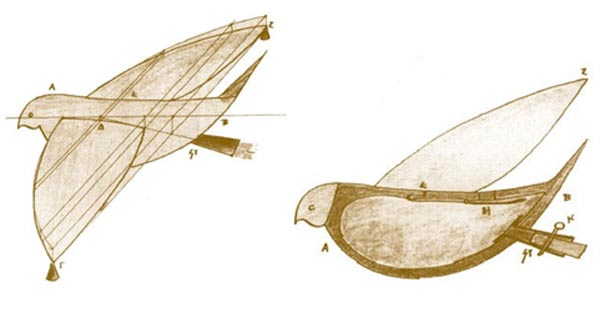
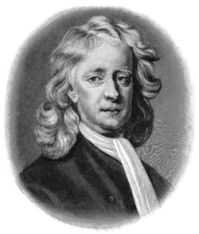
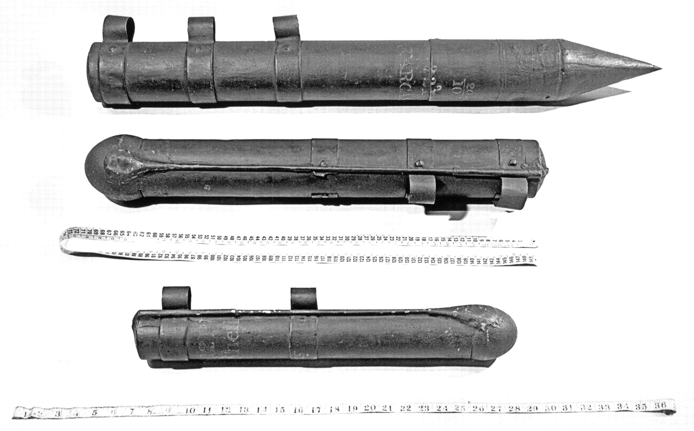
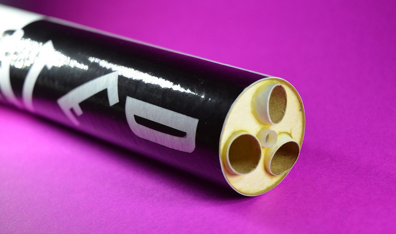
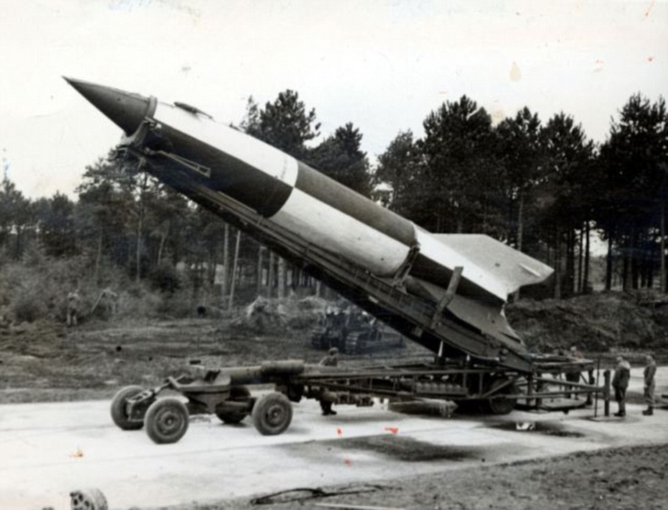
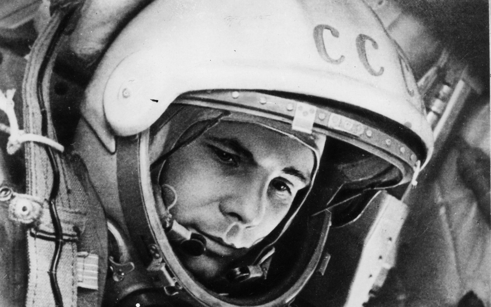
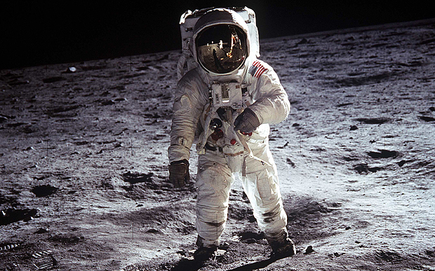

A Brief Timeline of Rocket Technology
By Alexei C 10E
-
400BC
The Flying Pigeon
A greek named Archytas mystified and amused the citizens of the city of Tarentum by flying a pigeon made of wood. Escaping steam propelled the bird suspended on wires. This was the first documented use of rocket like technology in history. The pigeon used the action-reaction principle, which was not stated as a scientific law until the 17th century.
 -
100AD
The Aeolipile
An aeolipile, also known as a Hero's engine, is a simple bladeless radial steam turbine which spins when the central water container is heated. Torque is produced by steam jets exiting the turbine, much like a tip jet or rocket engine. It was attributed to the mathematician and engineer Hero of Alexandria for its creation.

-
1232
Chinese fire Arrows
The first true rocket is invented by the Chinese. Fire arrows are used against the Mongol invaders.

-
1591
First Multi-Stage rocket
German fireworks maker Johann Schmidlap invents the two-stage rocket to reach higher altitudes. A large skyrocket (first stage) carries a smaller rocket (second stage). This had revolutionised rocket technology, as all later rockets are built on a multi-stage principle, exluding the shuttle, of course.
 -
1687
Principia
The Principia, published by aclaimed mathematician and scientist sir Isaac Newton, which contains his three laws of motion, lays the foundation and principles for all modern rocket science.

-
1792
Rocket Revival
The success of Indian rocket barrages against the British in 1792 and again in 1799 caught the interest of an artillery expert, Colonel William Congreve. Congreve set out to design rockets for use by the British military. The Congreve rockets were highly successful in battle, especially in the war of 1812.
 -
1844
Spin Stabilization
The next revolutionary invention in the field of rocket development was done by british scientist William Hale, who developed a technique called spin stabilization. In this method, the escaping exhaust gases struck small vanes at the bottom of the rocket, causing it to spin much as a bullet does in flight. Variations of the principle are still used today.
 -
1926
First Liquid fuel rocket
American Robert H Goddard flies a rocket powered by liquid oxygen and gasoline. Goddard goes on to build bigger rockets and higher rockets.
.jpg)
-
1942
V2 Rockets
Ballistic missiles are developed by German engineers led by Wernher Von Braun during the Second World War. This was the creation of the first rocket able to reach outer space. In 1946, with the help of captured German rocket engineers, the United States begins using V-2 rockets as sounding rockets to make measurements of the atmosphere at high altitudes.
 -
1957
Sputnik 1
On October 4, 1957, the world was stunned by the news of an Earth-orbiting artificial satellite launched by the Soviet Union. Called Sputnik I, the satellite was the first successful entry in a race for space between the two superpower nations. Less than a month later, the Soviets followed with the launch of a satellite carrying a dog named Laika on board. Laika survived in space for seven days.

-
1961
Yuri Gagarin
Yuri Alekseyevich Gagarin was a Russian Soviet pilot and cosmonaut. He was the first human to journey into outer space, when his Vostok spacecraft completed an orbit of the Earth on 12 April 1961.
 -
1969
Moon Landing
Apollo 11 is the first space flight to land people on the Moon. Neil Armstrong is the first astronaut to set foot on the Moon. 12 astronauts walk on the Moon during 6 missions. Ed Cernan is the last man to step foot on the Moon in 1972.
 -
2010
First Private Space Launch
The commercial era of space travel begins with SpaceX, launching an unmaned probe called falcon 9. The capsule circles the earth twice and sucessfully lands in an ocean, opening the doors for space enthusiasts and business entrepreneurs alike.

-
Beyond Today
Re-usable rockets? A man on mars? Intetellar travel?